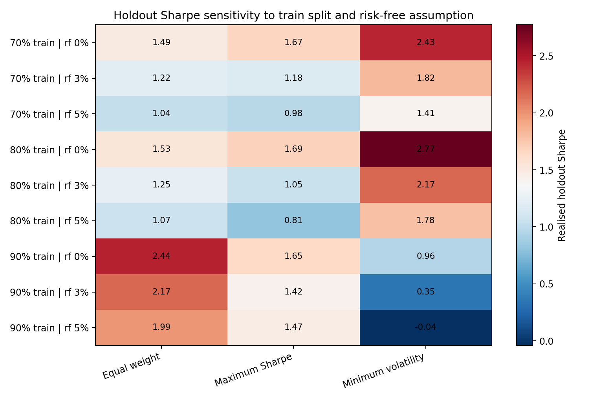

Assumption sensitivity
How conclusions move when assumptions change.
One reproducible fictional market path is re-run across three train/holdout splits and three annual risk-free-rate assumptions.
Synthetic demonstration only. The objective is sensitivity analysis, not selection of a preferred setting or a market forecast.
70 / 30train / holdout case
80 / 20baseline split
90 / 10train / holdout case
0% · 3% · 5%risk-free-rate inputs
Holdout Sharpe sensitivity

Realised holdout Sharpe across train/holdout and risk-free-rate assumptions.
Selected results
| Train fraction | Risk-free rate | Equal weight | Maximum Sharpe | Minimum volatility |
|---|---|---|---|---|
| 70% | 0% | 1.490 | 1.669 | 2.434 |
| 70% | 3% | 1.215 | 1.176 | 1.816 |
| 70% | 5% | 1.036 | 0.976 | 1.415 |
| 80% | 0% | 1.534 | 1.688 | 2.770 |
| 80% | 3% | 1.250 | 1.050 | 2.170 |
| 80% | 5% | 1.065 | 0.812 | 1.780 |
| 90% | 0% | 2.444 | 1.647 | 0.957 |
| 90% | 3% | 2.169 | 1.422 | 0.353 |
| 90% | 5% | 1.991 | 1.468 | -0.039 |
Interpretation
The same modelling pipeline can produce different realised Sharpe ratios when the estimation window or risk-free input changes. The purpose of this layer is to expose that dependence rather than hide it.